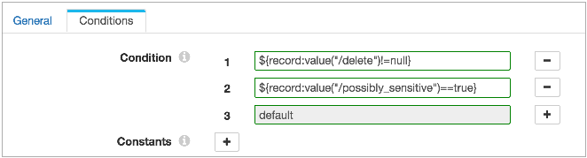
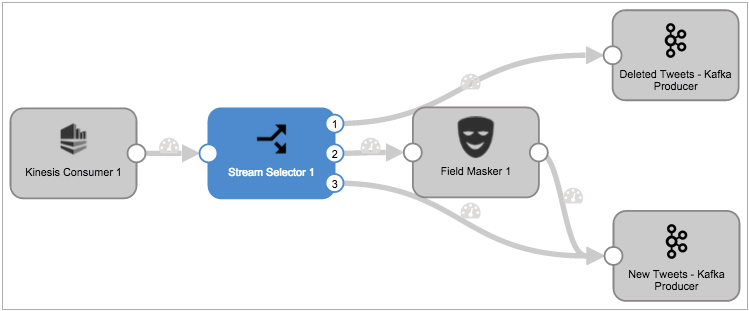

Stream Selector
The Stream Selector passes data to streams based on conditions. Define a condition for each stream of data that you want to create. The Stream Selector uses a default stream to pass records that do not match user-defined conditions.
When you define a condition, the Stream Selector creates an output that you connect to a downstream branch of the pipeline.
Stream 1: ${record:value("/State")==CA}
Stream 2: ${record:value("/ID")==null}
When you run the pipeline, records from California pass to Stream 1, records with missing IDs pass to Stream 2 and any record from California with a missing ID passes to both streams.
Default Stream
The default stream captures records that do not match user-defined conditions. Use the default stream to manage unmatched records.
When you configure the Stream Selector, you connect each stream to a branch in the pipeline. The default stream is the last stream in the stage.
You can configure the branch for the default stream to perform additional processing or to write directly to a destination. If you do not need the records in the default stream, you can connect the stream to a Trash destination.
For example, the following image shows the conditions for a Stream Selector that processes tweeted data:

The first condition evaluates for records that have been deleted. The second condition evaluates for records flagged as sensitive. The third default condition captures all remaining records.
The following image shows the Stream Selector in the pipeline:

The first stream passes deleted tweets to the Deleted Tweets destination. The second stream passes new tweets with sensitive language to a Field Masker to mask the inappropriate text. The third stream, the default stream, passes all remaining tweets directly to the New Tweets destination.
Sample Conditions for Streams
A condition defines the data that passes to the associated stream. All records that meet the condition pass to the stream. Use the expression language to define conditions.
When you define a condition, you typically base it on values in one or more fields in the record.
Sample Conditions
- ${str:contains(record:value("/line"), "ERROR")}
- Checks the data in the Line field for the text, "ERROR".
- If the field contains "ERROR", the record passes to the stream.
- ${str:contains(str:toLower(record:value("/message")), "fatal")}
- Lowercases the string values in the Message field, and then checks the data in the field for "fatal".
- If the field contains "fatal", the record passes to the stream.
- ${record:value("/priority") > 1}
- If the value in the Priority field is greater than one, the record passes to the stream.
- ${record:value("/AccountID")==null}
- If the AccountID field is null, the record passes to the stream.
Configuring the Stream Selector
Use a Stream Selector to route data to different streams based on conditions.
-
In the Properties panel, on the General tab, configure the
following properties:
General Property Description Name Stage name. Description Optional description. Required Fields 
Fields that must include data for the record to be passed into the stage. Tip: You might include fields that the stage uses.Records that do not include all required fields are processed based on the error handling configured for the pipeline.
Preconditions Conditions that must evaluate to TRUE to allow a record to enter the stage for processing. Click Add to create additional preconditions. Records that do not meet all preconditions are processed based on the error handling configured for the stage.
On Record Error Error record handling for the stage: - Discard - Discards the record.
- Send to Error - Sends the record to the pipeline for error handling.
- Stop Pipeline - Stops the pipeline. Not valid for cluster pipelines.